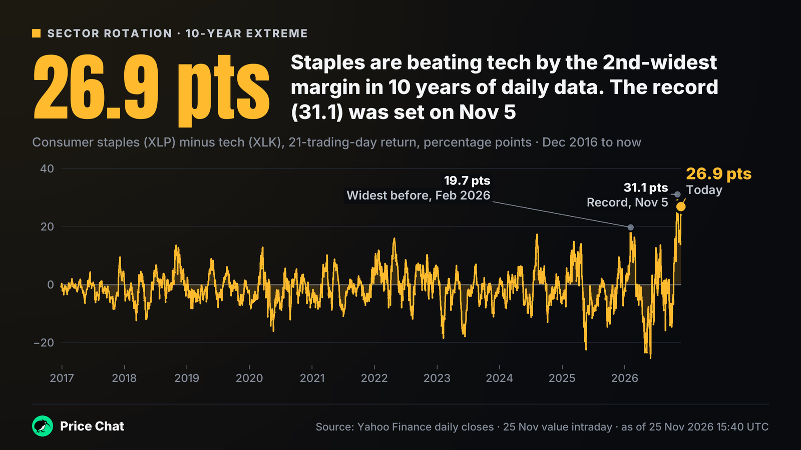

01
Rotation extreme
detector: rotation + record · chart: spread_lines
Post text
Defensive vs tech, past 21 trading days: Consumer staples +5.8% Tech −21.1% That 26.9-point gap is the 2nd-widest in 10 years of daily data, behind 31.1 on Nov 5. Before this autumn, the record was 19.7 (Feb 2026). Investors are hiding in toothpaste and groceries.
264 / 280 characters
Sources: Yahoo Finance (XLP, XLK)
Source: Yahoo Finance daily closes · 25 Nov value intraday · as of 25 Nov 2026 15:40 UTC
Source: Yahoo Finance daily closes · 25 Nov value intraday · as of 25 Nov 2026 15:40 UTC
Calculation
- 21-day return = close(t)/close(t−21 sessions) − 1. XLP: 92.18/87.15 − 1 = +5.77%; XLK: 149.54/189.49 − 1 = −21.08% (2026-10-27 → 2026-11-25, last close intraday).
- Spread = 5.77 − (-21.08) = 26.85 pts. Rank 2 of 2,493 daily spreads since 2016-12-27 (10.0 years).
- Record: 31.06 pts on 2026-11-05. Widest before the current episode (windows ending ≥ 42 sessions ago): 19.71 pts on 2026-02-05.
Differs from the design doc
- Doc: 'the widest in 10 years'. Recomputed: today's 26.9 pts is rank 2; the record is 31.1 pts on 2026-11-05. Wording changed to '2nd-widest'.